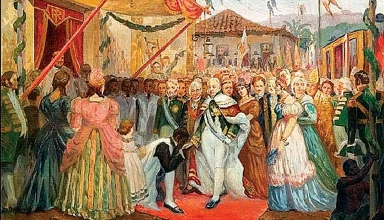
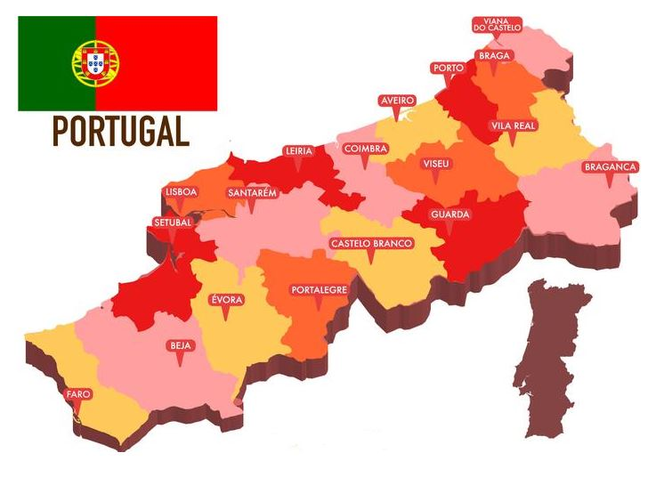
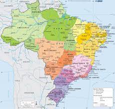
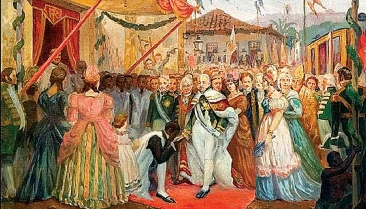
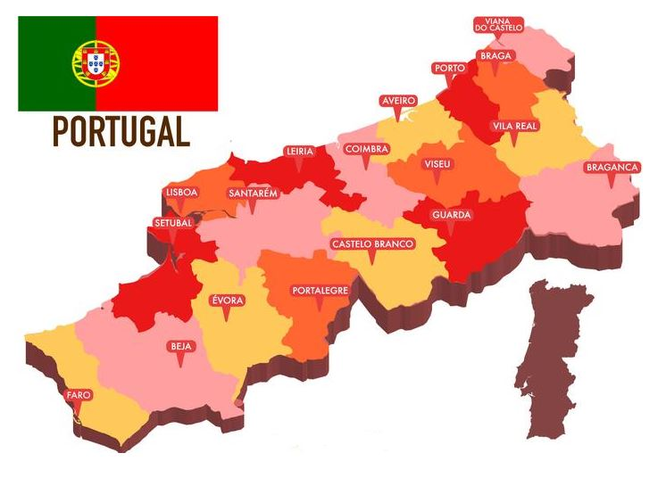
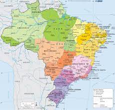

O Dia do Fico deu-se em 9 de janeiro de 1822, quando o então príncipe regente Dom Pedro de Alcântra foi contra as cortes portuguesas, que exigiam sua volta a Lisboa, ficando no Brasil.
Continuar
 




